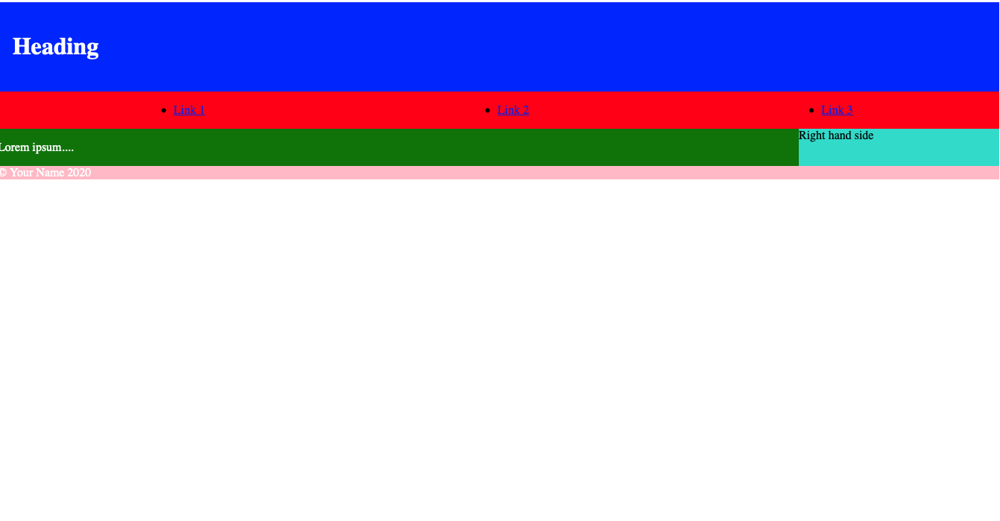
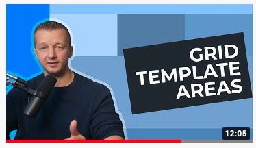
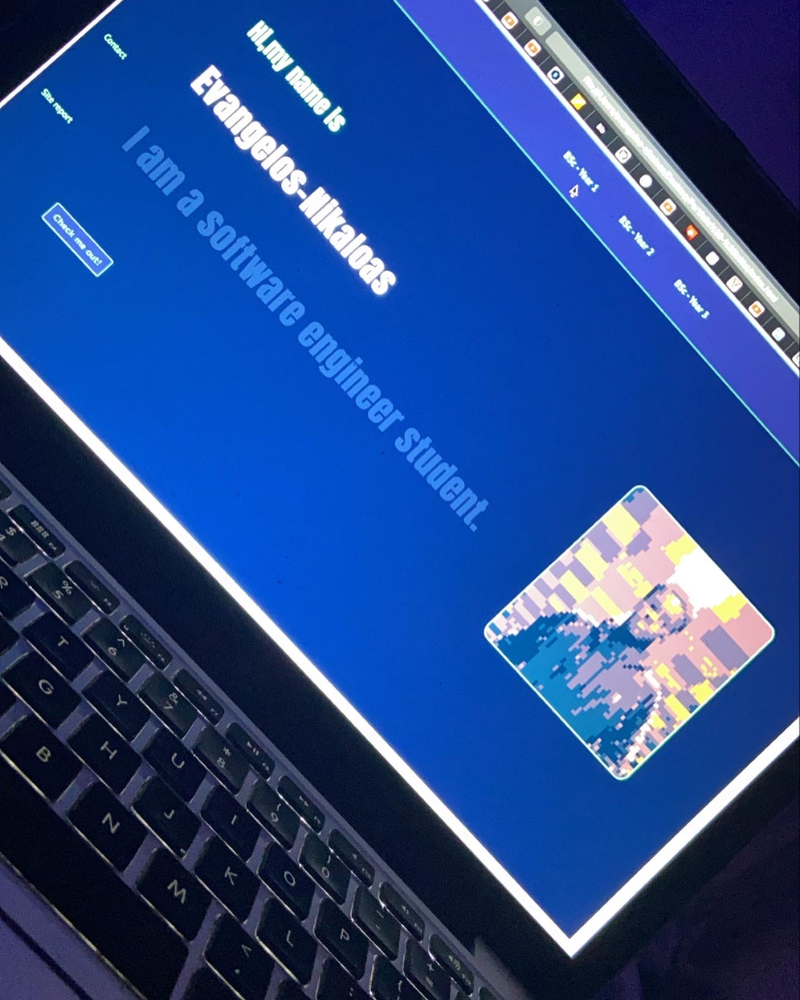
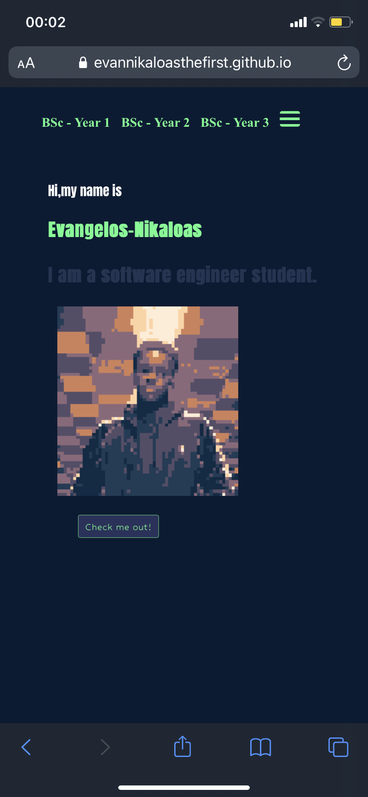
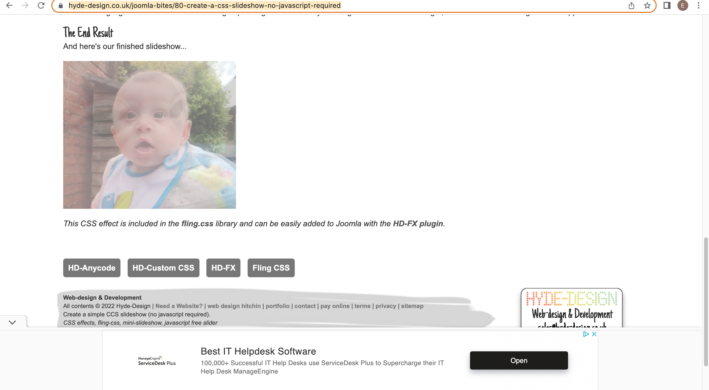

Site Report
The process of creating this website has been a really enjoyable experience. This was my first time being exposed to creating websites learning new techniques, methods and practises each lecture was something I took a lot from.(18-03-22). My lecturer also made this process much easier due to their enthusiasm and around the clock availability for an issue I had. (18-03-22).
In the earlier stages I had issues grasping the concept of the display: grid method as I couldn’t comprehend how to operate the grid-column-rows etc. After researching some videos of YouTube, I eventually grasped the concept and began creating template pages of a basic HTML page. The introduction to IDs was key as it allowed me to access specific elements and alter those without editing the rest of the elements on the page. The intro duction of CSS colours (RGB, Hex & colours) allowed me to start experimenting with what type of colours I would like my portfolio to be. (28-02-22)
Getting the design and colour scheme of the website was a bit of an issue as I had multiple ideas which I could initially decided upon. Initially I began with a nav bar across the width of the page with a grey background and blue highlights. I then opted for a new design. (30-02-22)
The mobile optimization was an aspect I really enjoyed learning about. This is because I mainly browse websites through my iPhone so create a website, I could create for myself to view on my own phone was really intriguing to me. It was also a small portion of exposure to mobile development and has really sparked an interest in my mind about potentially working towards a career in Mobile development. (13-03-2022). A key aspect I want my portfolio to have is responsivity and personalisation. As this website will be a representation of me to potential employers of mine so leaving an impression of simple , professional and clean is really key to me. (19-02-2022)
I went with a navy blue and iconic green design which was a design I felt would be a good design to go ahead with but after researching some portfolios on the web I opted to go for a more professional display and colour scheme. Therefore, I went with basic background colour of white. It’s a simple, and professional display which complements the accents of black and grey excellently. As I have previously had a portion of experience with Java I am relatively comfortable with debugging although it wasn’t as easy as Visual Code Studio does not always tell you the issues your code may have to why something may not work as how you instructed it to. (23-02-2022). The lecture about GitHub was key for me because I have attempted to use GitHub previously but struggled to understand how to operate it. I initially attempted to operate GitHub via the terminal as this contributed to the slow progression of understanding over GitHub. Chris introduced GitHub desktop which is such an easier method to upload, merge, and alter my code in an organized manner. I had issues as I had accidently selected every single file within my MacBook meaning Visual Studio Code had every single file open in my PCs directory. After searching for result on Google, myself and Chris was able de-select all but the necessary file required. (15-03-2022). To create my slide show in my validation page I found the code from this page -> https://www.hyde-design.co.uk/joomla-bites/80-create-a-css-slideshow-no-javascript-required. The images begin to fade in and out. I also got my sliding animation for my mobile nav menu also from the same website.
